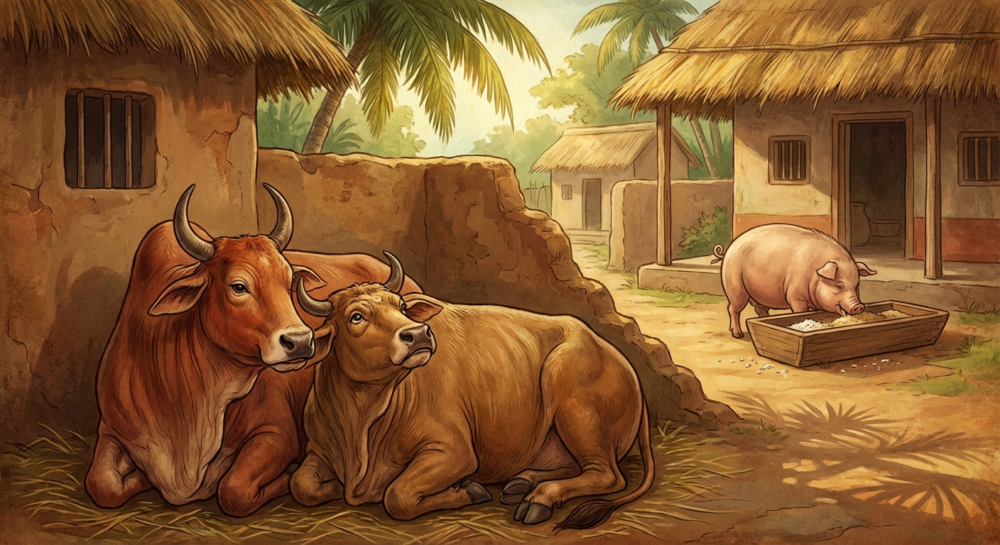

10. මුනික ජාතකය (30)
“මුනිකගේ ආහාරයට ආශා නොකරන්න” යනාදී වශයෙන් ඇරඹෙන මෙම ජාතකය බුදු රජාණන් වහන්සේ දෙව්රම් වෙහෙර වැඩවසන සමයෙහි, එක්තරා ථුල්ල කුමාරිකාවක් (තරබාරු තරුණියක්) කෙරෙහි ඇලුනු භික්ෂුවක් අරබයා දේශනා කළ සේක. මෙහි කථා පුවත තෙළෙස් වැනි නිපාතයේ එන චූළනාරදකස්සප ජාතකයෙහි (ජාතක අංක 477) විස්තර වන්නේය. බුදුරජාණන් වහන්සේ ඒ භික්ෂුවගෙන්, “සැබෑද මහණ, ඔබ උකටලී වී සිටින්නෙහිද?” යි විමසූ සේක. “එසේය ස්වාමීනි” යි භික්ෂුව පිළිතුරු දුන්නේය. “කුමක් නිසාද?” යි ඇසූ විට, “ස්වාමීනි, අර ථුල්ල කුමාරිකාව නිසාය” යි කීවේය. එවිට බුදුරජාණන් වහන්සේ, “මහණ, ඔය තැනැත්තිය ඔබට අනර්ථකාරීය. පෙර ආත්මයේදීත් ඔබ ඇගේ විවාහ මංගල දිනයේදී ජීවිතක්ෂයට පත්ව මහජනයාට ව්යංජනයක් (කටගැස්මක්) බවට පත් වූයෙහිය” යි වදාරා අතීත කථාව ගෙනහැර දැක්වූ සේක.
පෙර බරණැස් නුවර බ්රහ්මදත්ත රජු රාජ්යය කරන සමයෙහි, බෝධිසත්වයන් වහන්සේ එක් කුඩා ගමක, එක් ගෘහපතියෙකුගේ නිවසෙහි ගව යෝනියෙහි උපන්හ. උන්වහන්සේගේ නම “මහාලෝහිත” විය. ඔහුට “චූළලෝහිත” නමින් බාල සොහොයුරෙක්ද විය. ඒ නිවසේ සියලු බරපතල වැඩ කටයුතු සිදු කෙරෙන්නේ මේ සොහොයුරන් දෙදෙනා නිසාය. ඒ නිවසේ එක් තරුණ දියණියක් සිටියාය. ඇයව ඒ නගරයේම වාසය කරන එක්තරා කුල පුත්රයෙකුට විවාහ කර දීමට නියම කර ගෙන තිබුණි. ඇගේ දෙමව්පියෝ, “දියණියගේ විවාහ මංගල්යයට පැමිණෙන අමුත්තන්ට සංග්රහ පිණිස මස් (කටගැස්මක්) වන්නේය” යි සිතා, කැඳ හා බත් දී “මුනික” නම් වූ ඌරෙකු පෝෂණය කළහ. මෙය දුටු චූළලෝහිත තම සොහොයුරාගෙන් මෙසේ විමසීය: “මේ නිවසේ සියලු වැඩ කටයුතු කෙරෙන්නේ අප සොහොයුරන් දෙදෙනා නිසාය. නමුත් මේ මිනිස්සු අපට දෙන්නේ තණකොළ හා පිදුරු ආදිය පමණි. එහෙත් මේ ඌරාට කැඳ හා බත් දී පෝෂණය කරති. ඌ කවර කරුණක් නිසා මේවා ලබන්නේද?” එවිට සොහොයුරා මෙසේ පිළිතුරු දුන්නේය: “දරුව චූළලෝහිත, ඔබ ඌරාගේ භෝජනයට ආශා නොකරන්න. මේ ඌරා අනුභව කරන්නේ මරණීය භෝජනයකි. මේ තරුණියගේ විවාහ මංගල්යයට පැමිණෙන අමුත්තන්ට මස් පිණිස මොවුන් මේ ඌරා පෝෂණය කරති. තව දින කිහිපයකින් ඒ අමුත්තන් පැමිණෙනු ඇත. එවිට ඔවුන්, මේ ඌරා පාදවලින් අල්ලා ඇදගෙන ගොස්, ඇඳ යටින් එළියට ගෙන, මරා දමා, අමුත්තන් උදෙසා සූප ව්යංජන සාදන අයුරු ඔබටම දැක ගත හැකි වනු ඇත” යි පවසා මෙම ගාථාව වදාළේය.

“මුනිකගේ ආහාරයට ආශා නොකරන්න. ඔහු අනුභව කරන්නේ විපතට හේතු වන (මරණය ගෙන දෙන) බතකි. උත්සාහයකින් (තෘෂ්ණාවකින්) තොරව ලැබෙන පිදුරු අනුභව කරන්න. එය දීර්ඝායුෂ ලැබීමේ ලකුණයි.”
එහි “මා මුනිකස්ස පිහයි” යන්නෙන් අදහස් කළේ, මුනික ඌරාගේ භෝජනයට ආශා උපදවා නොගන්නා ලෙසයි. “මේ මුනිකයා රසවත් ආහාර අනුභව කරන්නේය” යි සිතා මුනිකට ඊර්ෂ්යා නොකරන්න. “කවදා නම් මමත් මෙසේ සැපවත් වෙම්දැ” යි සිතා මුනිකගේ තත්ත්වය නොපතන්න. මක්නිසාද යත් ඔහු අනුභව කරන්නේ “ආතුරන්නානි” හෙවත් මරණය ගෙන දෙන භෝජනයන්ය. “අප්පොස්සුක්කො භුසං ඛාද” යනු ඔහුගේ භෝජනය කෙරෙහි අපේක්ෂා රහිතව, තමාට ලැබෙන පිදුරු අනුභව කිරීමයි. “එතං දීඝායුලක්ඛණන්ති” යනු එය දීර්ඝායුෂ ලැබීමට හේතුව වන බවයි. ඊට සුළු වේලාවකට පසු ඒ අමුත්තෝ පැමිණියහ. ඔවුහු මුනික ඌරා මරා නානාප්රකාර අයුරින් පිසූහ. බෝධිසත්වයෝ චූළලෝහිතගෙන්, “දරුව, ඔබ මුනිකව දුටුවේදැ” යි ඇසූහ. “එසේය සොහොයුර, මම මුනිකගේ භෝජනයෙහි විපාකය දුටුවෙමි. ඔහුගේ ඒ භෝජනයට වඩා අපගේ තණ හා පිදුරු ආහාරය සිය ගුණයකින්, දහස් ගුණයකින් උතුම්ය; නිවැරදි වේ; එය දීර්ඝායුෂ ලැබීමේ ලකුණක්ද වේ” යැයි පිළිතුරු දුන්නේය.
බුදුරජාණන් වහන්සේ, “මහණ, ඔබ පෙර ආත්මයේදීත් මේ තරුණිය නිසාම ජීවිතක්ෂයට පත්ව මහජනයාගේ කටගැස්මක් බවට පත් වූයෙහි යැ” යි වදාරා මෙම ධර්ම දේශනාව ගෙනහැර දක්වා චතුරාර්ය සත්යය ප්රකාශ කළ සේක. චතුරාර්ය සත්ය දේශනාව අවසානයේ ඒ උකටලී වූ භික්ෂුව සෝවාන් ඵලයේ පිහිටියේය. ශාස්තෘන් වහන්සේ පූර්වාපර සන්ධි ගළපා ජාතකය නිමවා වදාළ සේක. “එකල්හි මුනික ඌරා වූයේ මේ උකටලී භික්ෂුවය. ථුල්ල කුමාරිකාව වූයේ මේ තරුණියමය. චූළලෝහිත වූයේ ආනන්ද තෙරුන්ය. මහාලෝහිත වූයේ මම ම වෙමි.”
දස වැනි මුනික ජාතක වර්ණනාවයි.
තෙවැනි කුරුංග වර්ගය නිමා විය.
එහි ජාතක නාමාවලිය (උද්දානය) මෙසේය:
- කුරුංග ජාතකය
- කුක්කුර ජාතකය
- භෝජාජානීය ජාතකය
- ආජඤ්ඤ ජාතකය
- තිත්ථ ජාතකය
- මහිළාමුඛ ජාතකය
- අභිණ්හ ජාතකය
- නන්දිවිසාල ජාතකය
- කණ්හ ජාතකය
- මුනික ජාතකය